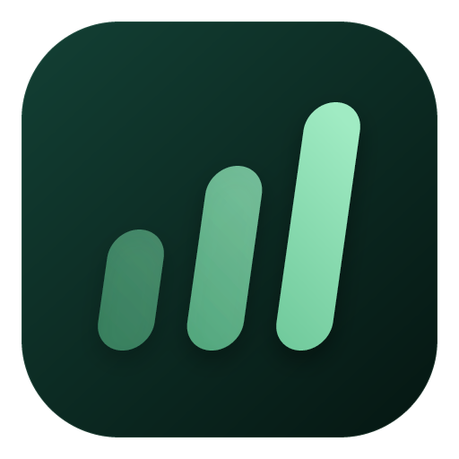
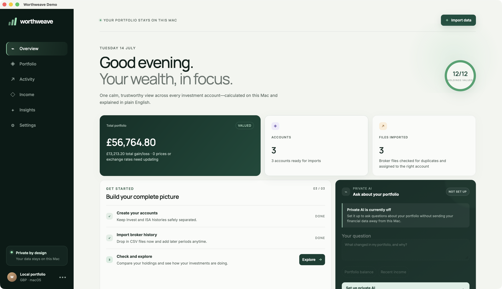
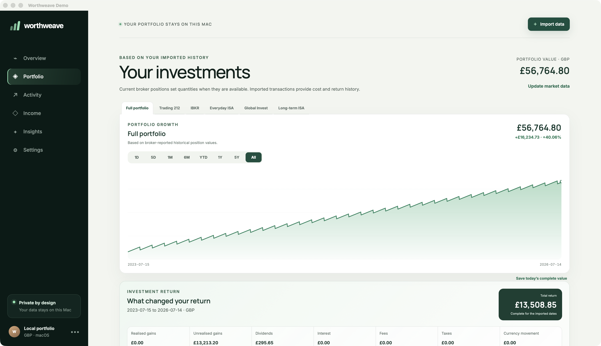

Consolidated reporting
Track value, gains, income, allocation, and true total return in your chosen reporting currency.

WorthweaveLocal-first · Open source · macOS
Worthweave brings investments held across Trading 212, Interactive Brokers, and Robinhood into one coherent, private view—without sending your financial history to someone else’s server.
Native Apple Silicon app · macOS 13 or later · Apache-2.0

One portfolio, every account
Worthweave reconstructs holdings from broker history while keeping each provider, account, currency, and tax wrapper distinct.
Track value, gains, income, allocation, and true total return in your chosen reporting currency.
Import Trading 212 and IBKR CSVs, or use verified read-only connections with idempotent synchronisation.
Missing prices, history, or exchange rates are surfaced clearly—never filled with plausible-looking estimates.
Use Rapid-MLX or Ollama to explain application-calculated results without changing the ledger.
Traceable performance
Understand what changed your portfolio through realised and unrealised gains, dividends, interest, fees, and taxes—with the underlying data-completeness status always visible.

Privacy is architecture
Broker files are parsed locally. Portfolio data lives in an owner-only SQLite database. Optional broker credentials are stored in macOS Keychain, and local AI is restricted to services running on your own machine.
Read the security modelWorthweave v0.3.1
Free, open-source portfolio analysis for Apple Silicon Macs.
Download from GitHub Worthweave provides analysis, not financial advice.